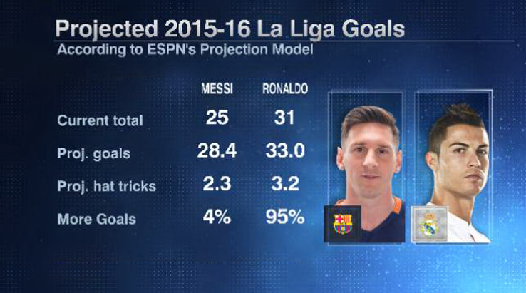

Lionel Messi stars but cannot cut Cristiano Ronaldo's league goals lead
Posted On April 30th, 2016

Current goals total in La Liga: Ronaldo 31-25 Messi
Cristiano Ronaldo missed another game through injury but Lionel Messi was unable to reduce his six-goal deficit on the Portuguese, even though the Argentine had an inspired game.
After Ronaldo sat out Real Madrid's 1-0 win against Real Sociedad, Messi only attempted two off-target shots for Barcelona at Real Betis. Instead he was decisive with creative play, setting up both of his side's goals in a 2-0 win with fine passes for Ivan Rakitic and Luis Suarez.
Here's what our Barcelona club blogger had to say about Messi's performance.
Sam Marsden on Messi: 7/10 -- His creation of Barca's second summed up his performance. Walking with the ball, there appeared to be no danger but then, out of nowhere, he produced a killer pass for Suarez and the game was done. The Argentine was good in patches but, like Barca overall, there was a lack of urgency and intensity at times, especially in the first half. Despite that, he was still the best player on the pitch.